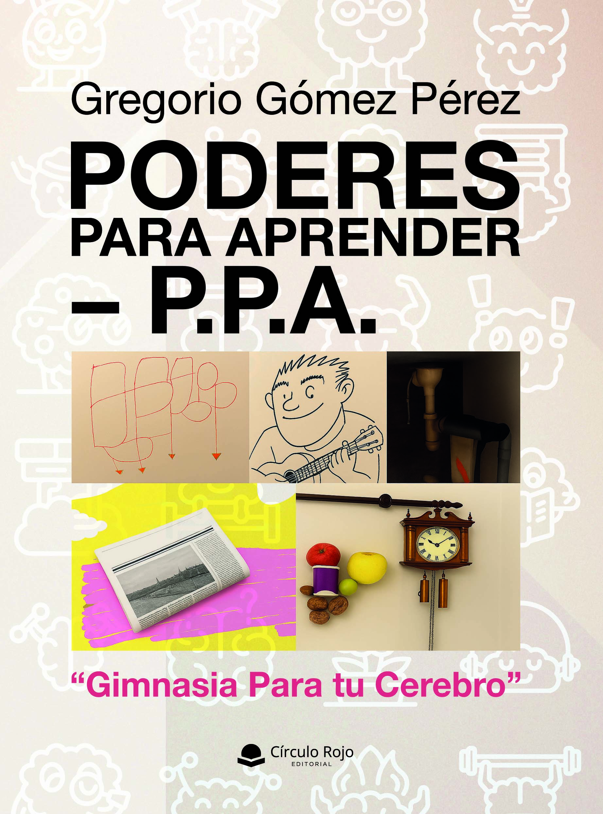
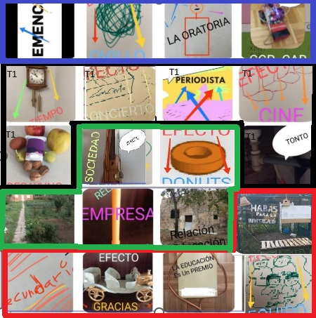

«¿Por qué hace 40 años éramos más de 40 alumnos por aula y hoy, bajando la ratio a menos de 30, nos cuesta más avanzar?»
Esa paradoja es el origen de esta Tetralogía: dar 20 «poderes» prácticos a alumnos, profesores, centros educativos y sociedad para pasar de ser meramente eficaces a ser verdaderamente eficientes (aprender más en menos tiempo).

«La suerte es lo que ocurre cuando la preparación coincide con la oportunidad.»
El éxito en el aula y en cualquier oficio no es azar: consiste en entrenar tu cerebro antes de que llegue la oportunidad.
«Quien sabe pensar, pero no sabe expresar lo que piensa, está al mismo nivel que quien no sabe pensar.»
En Poderes Para Aprendedores fomentamos que el aprendedor exponga, pregunte y comparta lo aprendido.
Sobre el Autor
Gregorio Gómez Pérez — Ingeniero Técnico Industrial y funcionario de carrera del Cuerpo de Profesores de Educación Secundaria, especialidad Tecnología.
La Tetralogía P.P.A.: 4 Libros y 20 Poderes Transformadores
Para Aprendedores (6)
CO.CI.PE.TI.DE.TO.
- • 1. Concierto • 2. Cine
- • 3. Periodista • 4. Tiempo
- • 5. Desayuno • 6. «Tonto»
Para Profesorado (4)
VE.O.O.COCO
- • Vehemencia • Ovillo
- • Oratoria • Continente-Contenido
Para Institutos (5)
GRA.PE.E.SA.HABAS
- • Gracias • Premio • Secundaria
- • Equipo • H.A.B.A.S.
Para la Sociedad (5)
SO.PA.EM.JU.DO
- • Sociedad • Pasado • Empresa
- • Juventud Acumulada • Donuts
Taller: ¿Cómo se fabricó este libro? Método de Proyectos
Aplicando la ingeniería y la Tecnología del aula para construir una obra paso a paso.
El Vehículo del Aprendedor: 6 Piezas Sincronizadas
CO.CI.PE.TI.DE.TO.Los 10 Pasos del Método de Proyectos Tecnológico
DE.BU.SO.EL.DI.PE.CO.CO.PRE.ELPODERES PARA APRENDER
«Gimnasia Para tu Cerebro»
Gregorio Gómez Pérez • Ingeniero Técnico Industrial | Funcionario de carrera del Cuerpo de Profesores de Educación Secundaria, especialidad Tecnología
Biblioteca María Teresa de León, Burgos
Objetivo de los 20 Poderes: Hacer más eficiente el aprendizaje en todos los sectores (aprender más en menos tiempo y mejorar la eficiencia profesional, abriendo la puerta a semanas laborales y educativas de 4 días).
Aprender es gimnasia → Genera capacidades → La IA desarrolla capacidades
Un centro educativo es como un gimnasio para ejercitar la mente:
¡Nadie va a un gimnasio a que le hagan las dominadas!
¿Quieres aprender cómo se hizo este libro? Método de Proyectos:
Mapa Visual de los 20 Poderes de la Tetralogía P.P.A.

Los dos carteles de Poderes para Aprender
Se muestran completos, uno debajo del otro. También puedes descargarlos en PDF.
1. Presentación y taller práctico
Descargar cartel 1 (PDF)Si tu navegador no muestra el PDF, utiliza el botón de descarga.
2. Próximas tres tetralogías
Descargar cartel 2 (PDF)Puedes descargar este segundo cartel para guardarlo o imprimirlo.
1. Efecto Concierto: Preparándose para un aprendizaje óptimo
«Al igual que un concierto musical se disfruta mucho más cuando se conoce la letra de las canciones y se puede cantar junto a los artistas, el estudiante interesado aprovecha al máximo las clases cuando está preparado con conocimientos previos.»
Zona de Desarrollo Próximo (Vygotsky)
Los nuevos conocimientos necesitan cimentarse sólidamente sobre lo ya sabido para facilitar el crecimiento académico sin frustración.
Calentamiento Mental
Al igual que un deportista calienta antes de competir, leer e informarse antes de clase permite seguir el ritmo con facilidad.
Ahorro de Horas en Casa
Tener una preparación previa elimina la necesidad de pasar largas horas descifrando lo que no se entendió en el aula.
10 Ejemplos para Alumnos y Estudiantes
- Estudiar y repasar antes permite participar activamente en discusiones.
- Investigar previamente facilita hacer preguntas relevantes y profundas.
- Seguir el ritmo de la clase y asimilar conceptos con mayor eficiencia.
- Relacionar nuevos conceptos con saberes previos mejora la retención.
- Aumenta la confianza y la participación en trabajos en grupo.
- Identificar puntos débiles antes de clase para resolverlos en el aula.
- Permite al docente plantear actividades más avanzadas y desafiantes.
- Mejor preparación y resultados en evaluaciones y exámenes.
- Mayor seguridad para exponer proyectos y presentaciones.
- Fomenta un ambiente activo donde el alumno es responsable de su progreso.
10 Ejemplos para Trabajadores y Profesionales
- Investigar previamente una tarea aporta ideas más creativas en reuniones.
- Preparar presentaciones a clientes proyecta confianza y profesionalidad.
- Anticiparse a obstáculos y desafíos en un proyecto técnico.
- Preparación previa en negociaciones comerciales para lograr acuerdos favorables.
- Destacar habilidades con eficacia en entrevistas de trabajo.
- Adaptación rápida y mayor rendimiento al adoptar nuevas tecnologías.
- Participación productiva en conferencias para facilitar decisiones.
- Analizar mercado y competencia para diseñar estrategias sólidas.
- Aumentar conocimientos para acceder a oportunidades de ascenso.
- Enfoque y productividad desde el inicio de la jornada laboral.
2. Efecto Cine: Silencio respetuoso y miradas de comunicación
«En una sala de cine, cuando alguien habla, los propios espectadores utilizan miradas sutiles para indicar que deben guardar silencio. Llevemos esa misma cultura de respeto al aula.»
Origen e Inspiración: Javier Sanz (IES La Bureba de Briviesca)
«Quiero recordar a Javier Sanz, alumno del IES La Bureba de Briviesca. Un día me habló de cómo, en otro centro, los propios alumnos, con sus miradas, lograban el silencio y la atención en clase. Aquella reflexión me impactó profundamente. Fue entonces cuando surgió en mí la idea del Efecto Cine.»
Los estudiantes aprenden a escucharse y a turnarse para hablar, construyendo un diálogo enriquecedor.
Pedir silencio con la mirada evita interrupciones constantes cuando el docente está explicando.
Desarrolla la comunicación no verbal, la empatía y la comprensión de las necesidades del grupo.
Al respetar los turnos de palabra, todos tienen oportunidad de expresar sus ideas y preguntas.
Crea un clima armonioso donde los alumnos se concentran mejor en los proyectos de Tecnología y en cualquier materia.
3. Efecto Periodista: Rueda de prensa en el aula
«Como un periodista en una rueda de prensa, el alumno no puede ser un espectador pasivo: acude documentado, escucha con alerta máxima, toma notas precisas y formula preguntas clave.»
10 Ejemplos de cómo el Efecto Periodístico mejora el rendimiento
4. Efecto Tiempo: El reloj en el aula, Bi.S.A. y S.O.L.
«Colocar un reloj en cada aula como recordatorio visual del valor del tiempo. Al igual que los padres realizan sus labores en su lugar de trabajo sin llevarse el trabajo a casa como norma general, aprovechar cada minuto en clase libera tus tardes.»
Bi.S.A. — Cómo estar en clase desde el primer día
- Bi — Bien Sentados: Espalda ergonómicamente apoyada en el respaldo, cuerpo frente al pupitre, material sobre la mesa y bolígrafo en la mano. Mejora la concentración, reduce lesiones de espalda y cuello, fomenta la participación, incrementa la productividad y es un valor social de respeto.
- S — Silencio: Básico para escuchar al profesor y no molestar a los compañeros. Favorece la concentración, facilita la escucha activa, ahorra tiempo de explicación e incrementa la calidad educativa.
- A — Atención: Estar bien sentado (Bi) y en silencio (S) son las premisas necesarias para activar la atención real y aprovechar un recurso limitado como es el tiempo.
S.O.L. — Los 3 Pilares de todo Oficio y Taller
- S — Seguridad: Prioridad absoluta en el taller, en el laboratorio y en cualquier profesión. «La seguridad es básica: tus manos son para toda la vida.»
- O — Orden: Ordenar bien los apuntes, las herramientas y las ideas agiliza el trabajo y multiplica la claridad mental.
- L — Limpieza: Trabajar en espacios limpios, cuidados y ventilados es condición imprescindible para que un centro y un país avancen.
5. Efecto Desayuno: La gasolina del motor cerebral
«Como dijo el poeta romano Juvenal: “Mens sana in corpore sano”. Imagina la mente de un estudiante como un motor que necesita ser encendido por la mañana con gasolina de calidad para no tambalearse ni calarse en mitad de la clase.»
Las 12 Ventajas de un Buen Desayuno en el Rendimiento Escolar
6. Efecto «Tonto»: Un espejo para despertar la conciencia
«¿Sabéis cuál es una de las definiciones de “tonto”? Pasar seis horas de la mañana en clase sin aprovecharlas para luego tener que estudiar el doble por la tarde.»
No es una etiqueta hiriente, sino una piedra lanzada al estanque tranquilo de la mente: un espejo para que cada estudiante evalúe si está tomando el timón de su educación y aprovechando las 6 horas de clase.
10 Ventajas Pedagógicas de esta Reflexión en el Aula
7. Reflexión Final, IA, Juventud Acumulada y Agradecimientos
La IA como Aceleradora
Aprender es gimnasia; la gimnasia genera capacidades; la IA desarrolla capacidades. Si tus capacidades son cero, la IA desarrollará cero. El ser humano debe estar siempre por encima de la tecnología con criterio propio.
Juventud Acumulada
Las personas mayores poseen décadas de sabiduría vital. Conectar a mayores y jóvenes en los centros educativos —junto con el «quinto día» de devolución social— une generaciones y humaniza la educación.
Agradecimientos del Autor
Dedicado a sus padres, Gregorio Gómez Vesga y Leonor Pérez Arroyo, a sus alumnos y compañeros del IES La Bureba, IES Félix Rodríguez de la Fuente, IES Diego Marín Aguilera, equipo Valbalt y al Colegio Oficial de Graduados e Ingenieros Técnicos Industriales de Burgos.
Poderes Para Aprender - P.P.A.
«Gimnasia Para tu Cerebro» • Gregorio Gómez Pérez • Editorial Círculo Rojo.
EL APRENDIZAJE ES GIMNASIA
Los centros educativos son gimnasios para entrenar la mente.
Entra en este gimnasio mental. Pulsa cada espacio para descubrir cómo una biblioteca, un aula o un libro pueden convertirse en instrumentos para desarrollar nuestras capacidades.

El centro educativo: nuestro gran gimnasio mental
Aquí no se entrenan los músculos: se ejercitan la memoria, la atención, la comprensión, la creatividad y el criterio propio.
Gimnasios mentales para todos
Gimnasio mental de Alumnos · de Docentes · de Centros educativos · de la Sociedad.
Una idea para recordar
Los libros son nuestras pesas: cada lectura, pregunta, ejercicio y reflexión fortalece capacidades.
La pregunta que hago a mis alumnos
«¿Irías al gimnasio, te sentarías dos horas y te irías sin hacer nada?»
Entonces, ¿por qué hacerlo en el gimnasio de tu mente?
PODERES PARA APRENDER · GIMNASIA PARA TU CEREBRO